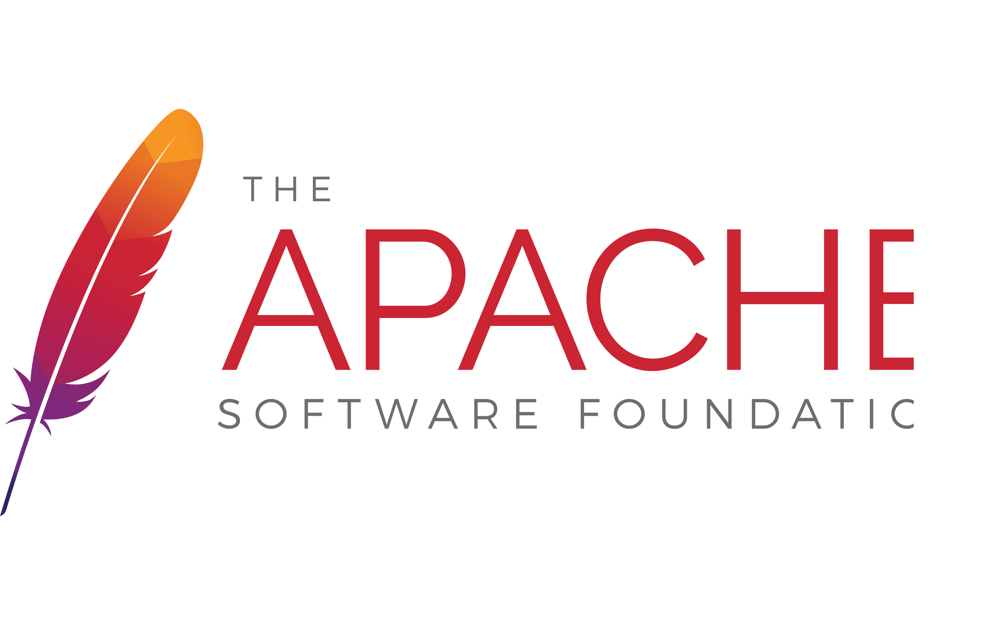
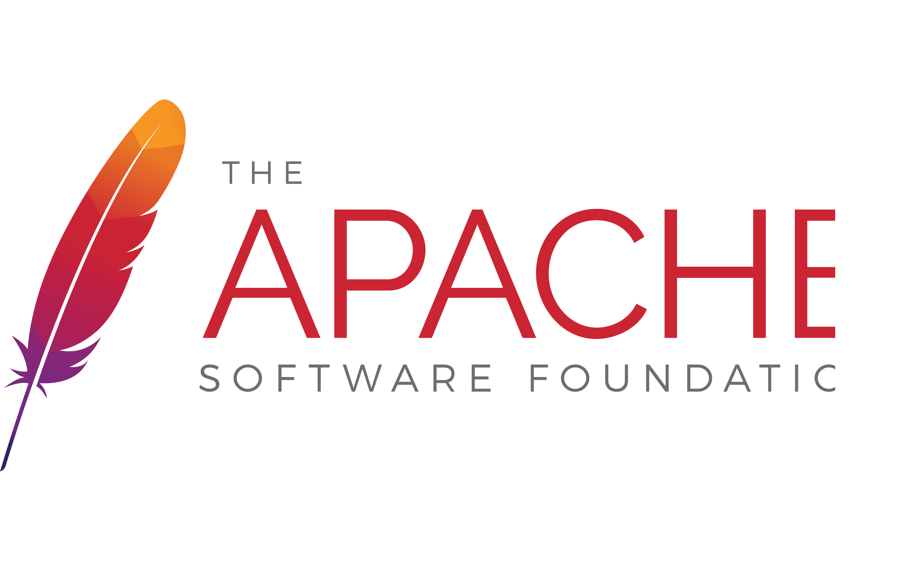

News
Feb 2023
USENIX 2023 Paper submitted!
Mar 2023
My bachelor thesis submitted to Cybersecurity!
May 2023
I got accepted to GSoC 2023!
Aug 2023
Our PoBF paper was accepted to USENIX Security 2023!
Apr 2024
I am serving on the ACM CCS 2024 Artifact Evaluation Committee.
May 2024
I am about to start the internship at TikTok Inc. Excited to you guys in bay area.

|
Haobin (Hiroki) Chen
Phone: +1 812-325-6706
|

About
Haobin Hiroki Chen is a first-year CS Ph.D. student at Indiana University Bloomington advised by Prof. XiaoFeng Wang.
Computer and system security researcher. PL enthusiast.
"Algorithms are the computational content of proofs." – Robert
Harper
Lemma extensionality:
∀ {A: Type} (x y: A) (P: A → Prop) (_: x = y) -> P x → P
y.
望向星星是哪星球 它突然間飄走
Education
| Indiana University at Bloomington
(IUB)
Ph.D Student in Computer Science Aug. 2023 - 2028 (Expected), Bloomington, IN, USA Advisor: Prof. XiaoFeng Wang |
| Nankai University (NKU) B.Eng. in Information Security Aug. 2019 - Jun. 2023, Tianjin, P.R.C. Advisor: Prof. Zheli Liu |
Publications
|
USENIX Security 2023 (Sec'23) A Verified Confidential Computing as a Service Framework for Privacy Preservation Hongbo Chen, Haobin Hiroki Chen, Mingshen Sun, Kang Li, Zhaofeng Chen, XiaoFeng Wang. |
Services
Work Experiences
| Research Intern @ Privacy
Innovation Lab, TikTok Inc., San Jose, CA,
May 2024 - Aug 2024 Supervisors:Dayoel Lee and Mingshen Sun
|
| Contributor, Remote @ GSoC
& ASF,
Jun. 2023 - Nov. 2023 Advisior: Mingshen Sun Code:
|
Academic Experiences
| Research Assistant, @ IUB,
Aug. 2023 - Advisior: Prof. XiaoFeng Wang
|
| Research Assistant, Remote @ IUB,
Jul. 2022 - July 2023 Advisior: Prof. XiaoFeng Wang (Center for Distributed Confidental Computing (CDCC)) Code:
|
| Research Intern, Nankai
University & Huawei Inc., Sept. 2020 - Aug. 2022
Advisior: Prof. Zheli Liu (Data Privacy Lab) Code:
|
Open-Source Projects
| Oblivious-RAM: Reference
Implementation for Different ORAM algorithms
Code: Implemented the following ORAM algorithms:
|
| NeoOS: A tiny OS kernel for
x86-64
Code: Awesome features:
|
| Prusti: A static verifier for
Rust
Code: Contributed to the project launched by ETHz. |
| SSE-SEAL
Code: An implementation of the paper SEAL: Attack Mitigation for Encrypted Databases via Adjustable Leakage. |
| C compiler for ARM-v7
architecture
Code: A compiler for SysY (a C-like language). We used Bison as front-end parser and mimicked LLVM to implement the CodeGen. |
| A Novel Cryptographic Primitive for
Encrypted Databases
Code: We propose a notion of frequency-smoothing encryption that aims to strike a balance between security and data utility. The code is a Proof-of-Concept (PoC) and is written in Rust, backed by MongoDB. |
Honors
|
The 3rd prize at the National College
Student Information Security Contest,
2021
- Ministriy of Education, China |
|
Nankai Academically Excellent Student
Scholarship, 2021, 2022
- Nankai University, China |
|
Nankai Innovation Award of Technology
and Research Scholarship 2021,
2022
- Nankai University, China |
|
Distinguished Thesis
Honor 2023
- Nankai University, China |
|
The 3rd Prize and Regional Outstanding
Award at the National Contest for OS Design and
Implementation (as mentor) 2023
- China |
 



Links
Hongbo Chen(IUB); Haosen Guan (Princeton); Xin'an Emmanuel Zhou (UCR); Hang Yang (GaTech); Mingshen Sun (TikTok Inc.)
Misc
Fun facts: I can speak German (B2-C1).
Last update: 08/09/2024. Webpage template borrows from Xiangnan He.